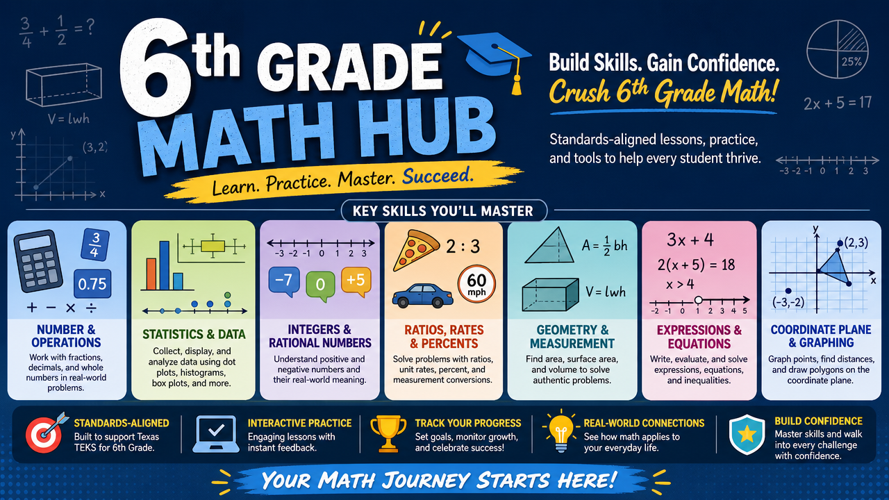

Georgia Standards of Excellence · Grade 6 Mathematics
Open study mode — explore all five units, play the games, drill vocabulary, and earn badges at your own pace.
Start studying →Pick the standards your unit covers, choose the resources to include, and build a shareable assignment for your class.
Build for my class →Students with an assignment link from their teacher: just open that link — it brings you straight to your checklist.
Teachers: a printable library for this hub is on the way — practice packets and review sheets will live in the 🖨 printable library.
One subscription covers Grade 6, 7 & 8 Math. · 🏠 All math grades
Educator Mode
A print-ready student packet and answer key for every standard, plus a complete review book for the whole grade — black & white and ready to copy. Free for your classroom.
A plain-English walkthrough of everything: building assignments, setting posttest attempts, the paperless gradebook, Warmup of the Day, printables and more. Downloads as a Word document you can keep or print.
📥 Download the Teacher's Guide
🎬 Quick how-to videos:
▶ Build an assignment ▶ Student walkthrough ▶ Warmup of the Day
A bell-ringer in two clicks: pick a topic (or roll the dice), pick a question type, and project it. Questions never repeat until the whole pool has been used.
Step 1: check every standard your current unit covers. The panel on the right shows exactly which study guides, games, videos, and PhET labs match — live.
Counts update live from your Step 1 selection. Grayed-out types have no matching content yet.
🩺 Pretests are completion-only — they never count against the score. 🏁 Posttest question banks arrive in Phase 4; safe to include now, the student view will activate them automatically.
The link freezes exactly what you picked — content added to the site later never changes an assignment you've already handed out.
⚠️ Heads up: you're viewing this site as a local file, so this link only works on this computer. Host physical_science_hub.html on the web (GitHub Pages, your school server, etc.), open it from that web address, and generate from there — links will then work on any student device.
QR code — project it or print it
Paste-ready LMS instructions
Students click "📋 Copy results code" on their checklist and paste the code into your LMS assignment. Paste everything they sent below (any order, any mess) and build the table — sorted by period, tamper-checked automatically.
Enter the five values exactly as printed on the report. A valid code proves the name, score, and date weren't edited after printing.
Educator Mode
Your teacher tools — assignment builder, gradebook, and printable library — live behind a free account. Sign in, or create one in a few seconds.
New here? Create an account →
👩🎓 Students never need an account. They just open the assignment link you send — this sign-in is only for teacher tools.
Educator Mode
Choose a new password for your teacher account, then you'll go straight to your tools.
Class Assignment
Grade 6 Mathematics · Georgia Standards of Excellence
Study guides for every lesson, flashcards, practice quizzes that tell you why an answer is right or wrong, and arcade games that secretly make you smarter. Pick your element below to begin.
Open a unit and read the study guide. Each lesson card has the key idea, the formula if there is one, and the classic mistake to avoid.
Flip through the flashcards until you can define every term without peeking. Shuffle them so you're not just memorizing the order.
Take the practice quiz. You get instant feedback and an explanation on every single question — wrong answers teach you the most.
Hit the Arcade. Beat your high score in every unit minigame.
Quiz best scores and game high scores will show up here as you play. (Progress saves on this device when the site is hosted on a regular web page.)
Earn badges by taking quizzes, chasing streaks, and keeping up with your vocabulary review. Gray badges are still locked — go get them.
Game Arcade
Every game here drills a skill straight off the unit test. Chase a streak, beat your high score, and you'll be studying without noticing.
All five units · 70+ terms
Flip cards to study, or switch to Quiz Me mode and prove it. Choose a unit or take on the whole deck.
Study Tools
| Quantity | Formula | Units | Unit |
|---|---|---|---|
| Density | D = m ÷ V | g/cm³ or g/mL | Matter |
| Kinetic energy | KE = ½ × m × v² | joules (J) | Energy |
| Gravitational PE | PE = m × g × h | joules (J) | Energy |
| Speed | s = d ÷ t | m/s | Motion |
| Acceleration | a = (vfinal − vinitial) ÷ t | m/s² | Motion |
| Newton's 2nd Law | F = m × a | newtons (N) | Motion |
| Wave speed | v = f × λ | m/s | Waves |
| Weight | W = m × g (g ≈ 9.8 m/s² on Earth) | newtons (N) | Gravity |
Three 20-minute sessions across three days will beat one 60-minute cram every time. Your brain files memories while you sleep — give it more nights to work with.
Re-reading feels productive but fools you. Closing the book and quizzing yourself — flashcards, practice quizzes, explaining out loud — is what actually moves facts into long-term memory.
If you can teach Newton's Third Law to a sibling (or your dog), you know it. If you get stuck mid-sentence, you just found exactly what to study next.
When you miss a quiz question on this site, read the explanation, then come back tomorrow and try that quiz again. Missed questions are a map of what to study.
Measured with a triple-beam balance or digital scale, in grams (g). Mass never changes with location.
Liquids: graduated cylinder, read at the bottom of the meniscus, in mL. Regular solids: L × W × H in cm³. Irregular solids: water displacement.
Measured with a thermometer in °C for science class. Water freezes at 0 °C and boils at 100 °C at sea level.
Printable Library
Black-and-white, print-ready practice packets for every Grade 6 math standard, plus a complete review book — each with a student packet and a matching answer key. Open to signed-in teachers with a subscription (Cherokee County teachers are free).
Every file opens as a PDF in a new tab — use your browser's print button (Ctrl+P) and "Save as PDF" to keep a copy. Formatted for standard letter paper in black & white.